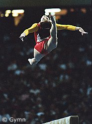

Liu Xuan (CHN)
1996 World B Champ
1998 World Cup B Champ
2000 Olympic AA Bronze Medalist and B Gold Medalist

|
Medal Total
- Olympic Games: 1
Gold, 2 Bronze
World Championships: 1 Gold, 1
Bronze
- World Cup: 1 Gold, 1
Bronze
|
Liu was born on March 12, 1979,
in Changsha, Hunan Province. She was the first female gymnast to perform a
one-arm giant swing on uneven bars. She was especially good on beam,
winning the World title in 1996, the World Cup title in 1998 and the Olympic
title in 2000. She was the first Chinese female gymnast to win an
all-around gymnastics medal at the Olympics.
Competition Results
- 1994
- Asia Junior Gymnastics Championships: 1st Team, 1st AA,
1st B
- Asian Games: 1st Team, 2nd UB
- DTB Cup: 1st B, 4th UB, 8th FX
- Swiss Cup: 3rd B, 4th UB, 6th FX
- World Championships (Dortmund): 4th Team
-
- 1995
- China Cup: 2nd AA
- Pre-Olympics: 5th AA
- Subway Challenge: 3rd AA
- USA-BLR-CHN Tri-Meet: 8th AA
-
- 1996
- Olympic Games: 4th Team, 75th AA
(prelims)
- World Championships (San Juan): 1st B, 8th UB
-
- 1997
- BLR-CHN-SUI Tri-Meet: 1st AA
East Asian Games: 1st AA, 1st B
- World Championships (Lausanne): 3rd Team,
7th AA
-
- 1998
- Asian Games: 1st Team, 1st AA, 1st B
- China Cup: 8th AA
- CHN Nationals: 1st AA
- French International: 3rd B, 4th UB
- Sagit Cup: 1st UB, 6th B
- World Cup: 1st B, 3rd UB
-
- 1999
- American Cup: 6th AA
- 3-on-3 International: 5th Team
2000
Olympic Games: 3rd Team, 3rd
AA, 1st B
-
This page was last updated on October 18, 2000.
© Gymn Forum